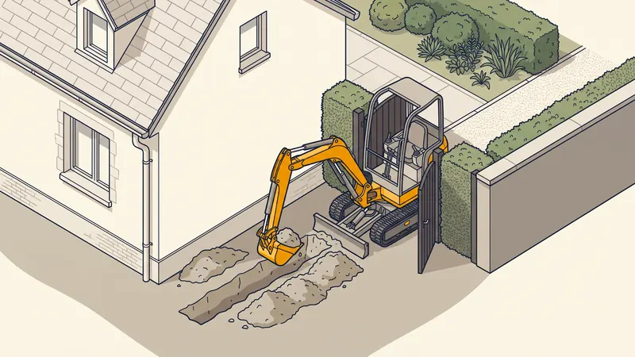

Location Mini-Pelle : Prix, Conseils & Guide Pratique
La location de mini-pelle est une solution pratique pour réaliser des travaux de terrassement, creuser des tranchées ou aménager un jardin. Que vous soyez particulier ou professionnel à Aix-en-Provence ou dans les Bouches-du-Rhône, ce guide vous aide à choisir la bonne taille de mini-pelle, comprendre les prix et les précautions de sécurité.

Les différentes tailles de mini-pelles
Micro-pelle (0,8 à 1,5 tonne)
La micro-pelle est l'engin le plus compact. Avec une largeur de 70 à 100 cm, elle passe par les portails de jardin et les passages étroits. Sa profondeur de fouille atteint 1,5 à 2 mètres. Elle est idéale pour les travaux légers en espace restreint.
Utilisations : tranchées pour réseaux (eau, électricité, drainage), plantation d'arbres, petits aménagements de jardin, pose de clôture.
Mini-pelle standard (1,5 à 3 tonnes)
C'est la catégorie la plus polyvalente et la plus louée. Avec une profondeur de fouille de 2,5 à 3,5 mètres et un godet de 30 à 50 cm, elle convient à la majorité des travaux de particuliers et de petits chantiers professionnels.
Utilisations : viabilisation de terrain, terrassement de piscine, fondations légères, pose de fosse septique, installation de micro-station.
Mini-pelle moyenne (3 à 5 tonnes)
Plus puissante, cette catégorie offre une profondeur de fouille de 3,5 à 4,5 mètres. Elle est équipée de chenilles en caoutchouc ou en acier selon les modèles. Son poids permet de travailler dans des sols plus durs.
Utilisations : terrassement de maison, création de murs de soutènement, démolition légère, déplacement de matériaux lourds.
Mini-pelle lourde (5 à 8 tonnes)
À la frontière entre mini-pelle et pelle mécanique, cette catégorie est réservée aux chantiers importants. Sa puissance et sa portée permettent des travaux intensifs. Elle nécessite un transport par porte-engin.
Utilisations : terrassement en terrain pentu, fondations profondes, excavation de sous-sol, travaux de VRD importants.

Tableau des prix de location
| Catégorie | Prix / jour | Prix / semaine | Avec chauffeur / jour |
|---|---|---|---|
| Micro-pelle 0,8-1,5T | 150 - 200 € | 500 - 800 € | 400 - 500 € |
| Mini-pelle 1,5-3T | 200 - 300 € | 700 - 1 200 € | 500 - 600 € |
| Mini-pelle 3-5T | 250 - 400 € | 900 - 1 500 € | 550 - 700 € |
| Mini-pelle 5-8T | 300 - 500 € | 1 200 - 2 000 € | 600 - 800 € |
Prix indicatifs HT dans les Bouches-du-Rhône en 2026. Le transport aller-retour (150-400 €) et l'assurance casse (50-100 €/jour) s'ajoutent à ces tarifs.
Location avec ou sans chauffeur ?
Location sans chauffeur (seul)
La location "sèche" (sans chauffeur) est destinée aux personnes ayant une expérience de conduite d'engins. Le loueur vérifie généralement vos compétences et peut demander une attestation de formation. Vous êtes responsable de l'engin et des dommages éventuels.
Avantages : coût réduit, flexibilité horaire, vous travaillez à votre rythme.
Inconvénients : responsabilité totale, risque de dommages, rendement moindre si vous n'êtes pas expérimenté, pas de conseil technique.
Location avec chauffeur (machiniste)
La location avec chauffeur professionnel (machiniste) est la solution la plus sécurisée et la plus efficace. Le machiniste connaît parfaitement l'engin, respecte les règles de sécurité et travaille 3 à 5 fois plus vite qu'un non-professionnel.
Avantages : efficacité maximale, sécurité optimale, conseil technique sur le chantier, pas de responsabilité sur l'engin.
Inconvénients : coût plus élevé, horaires définis (8h par jour en général).
Chez STP Terrassement, nous proposons la location d'engins avec chauffeur sur Aix-en-Provence et les Bouches-du-Rhône. Nos machinistes sont titulaires du CACES et disposent d'une grande expérience de chantier.
Ce qu'il faut vérifier avant de louer
Accessibilité du chantier
- Largeur du passage : mesurez la largeur de votre portail et des accès. Une micro-pelle fait 70-100 cm de large, une 3T fait 150-170 cm.
- Portance du sol : vérifiez que le terrain supporte le poids de l'engin (une 3T exerce environ 3 tonnes sur un châssis de 1,5 m²).
- Pente d'accès : les mini-pelles sur chenilles franchissent des pentes de 30-35 % maximum.
- Réseaux enterrés : faites une demande DICT (Déclaration d'Intention de Commencement de Travaux) pour localiser les réseaux souterrains. C'est gratuit et obligatoire.
Équipements et accessoires
Vérifiez les équipements inclus dans la location :
- Godets : godet standard (40-60 cm), godet de curage (large), godet étroit pour tranchées (20-30 cm).
- Attache rapide : permet de changer de godet rapidement sans descendre de la cabine.
- BRH (brise-roche hydraulique) : indispensable en sol rocheux, en supplément (50-150 €/jour).
- Lame de terrassement : à l'avant de l'engin, pour niveler et stabiliser la machine.
Règles de sécurité essentielles
Avant le chantier
- Effectuez la DICT pour repérer les réseaux enterrés (gaz, électricité, eau, télécom).
- Délimitez la zone de travail et interdisez l'accès aux personnes non autorisées.
- Vérifiez l'état de l'engin : niveaux d'huile, liquide de refroidissement, état des chenilles et des flexibles hydrauliques.
- Portez les EPI (Équipements de Protection Individuelle) : casque, gilet haute visibilité, chaussures de sécurité, gants.
Pendant le chantier
- Respectez les distances de sécurité avec les bords de fouille (minimum 1 m du bord pour une mini-pelle).
- Ne travaillez jamais sous la flèche et ne transportez jamais de personnes dans le godet.
- Attention aux réseaux aériens (lignes électriques) : distance minimale de 3 mètres.
- En cas de terrain en pente, positionnez toujours l'engin perpendiculairement à la pente.
DICT : une obligation légale
La DICT (Déclaration d'Intention de Commencement de Travaux) est obligatoire avant tout travail mécanique dans le sol. Elle se fait en ligne sur le site reseaux-et-canalisations.ineris.fr au moins 10 jours ouvrés avant le début des travaux. Les exploitants de réseaux vous envoient les plans de localisation de leurs ouvrages. Cette démarche est gratuite et essentielle pour éviter les accidents (rupture de canalisation de gaz, sectionnement de câble électrique).
Location ou prestation complète ?
Avant de louer une mini-pelle, posez-vous la question : ne serait-il pas plus économique de confier l'intégralité des travaux à un professionnel ? Chez STP Terrassement, une journée de terrassement avec engin et chauffeur revient souvent au même prix qu'une location avec transport, mais le travail est réalisé 3 à 5 fois plus vite par un professionnel expérimenté.
De plus, en faisant appel à un professionnel, vous bénéficiez de la garantie décennale, de l'assurance responsabilité civile professionnelle et du respect des normes de sécurité. Un terrassier professionnel sait adapter ses techniques au sol et aux contraintes de votre terrain en région PACA.
Besoin d'une mini-pelle avec chauffeur ?
STP Terrassement propose la location d'engins avec machiniste à Aix-en-Provence. Devis gratuit sous 24h.